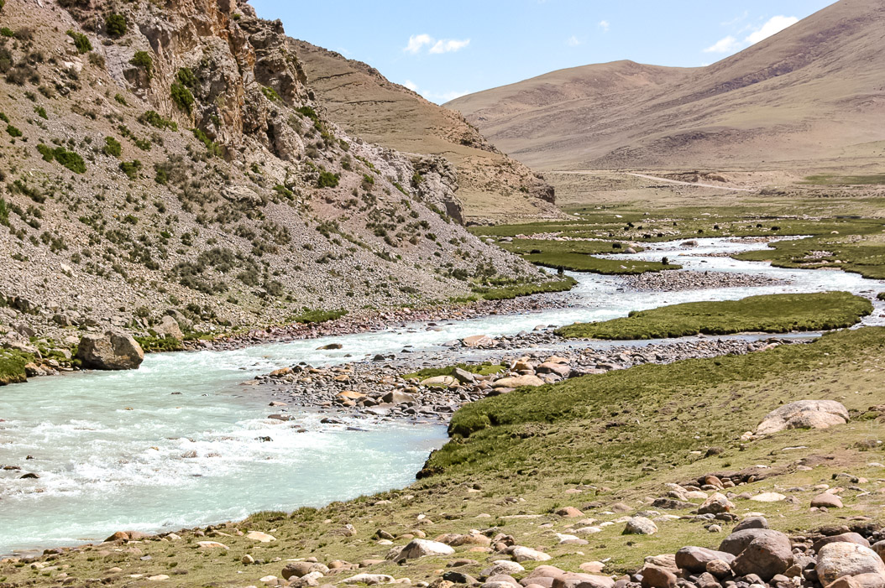
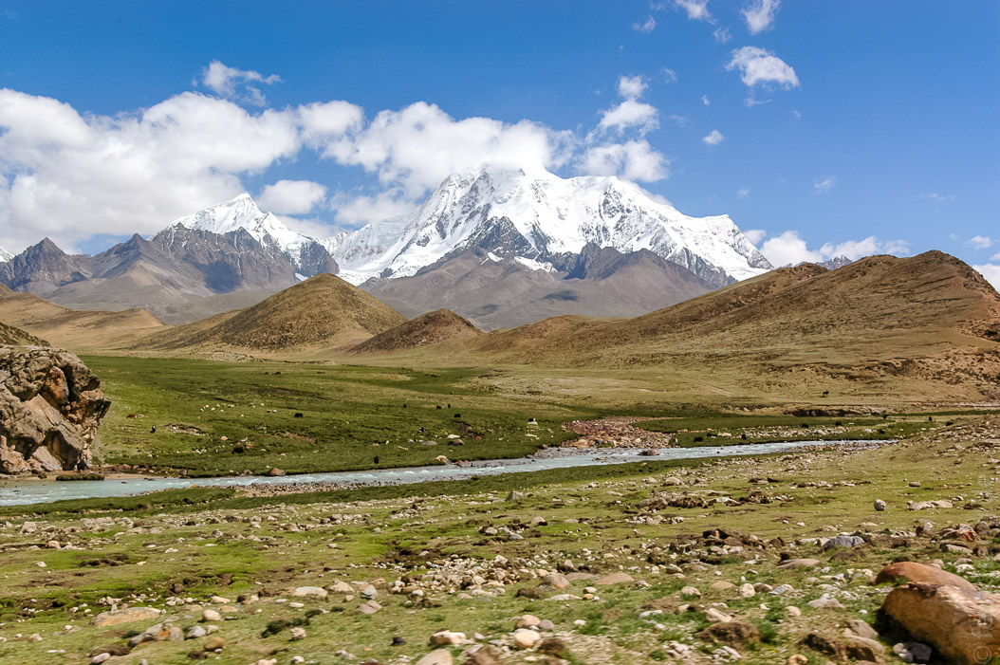
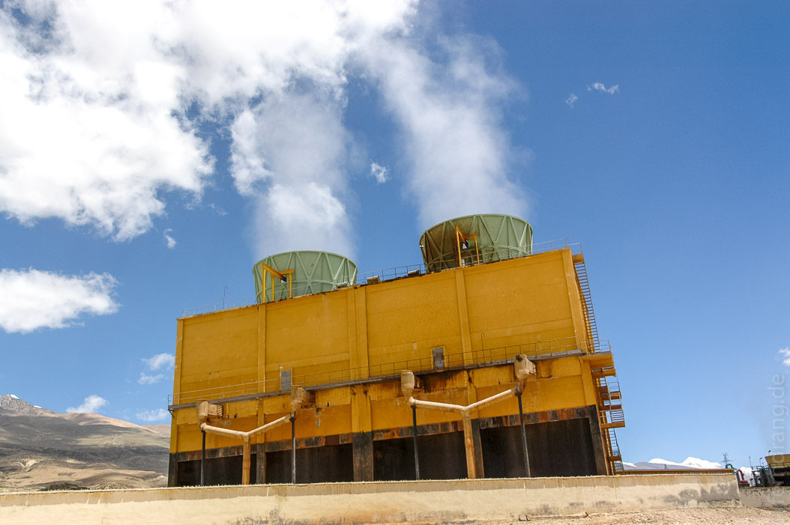

Von Shigatse aus sind wir nach Damshung gefahren, was einen ganzen Tag in Anspruch nahm. Der Ort liegt sehr nah am Namtso-See, der als nächstes auf dem Programm steht.
Der Weg hat sich aber, wie immer in Tibet, sehr gelohnt. Wieder sind wir endlose Täler entlang gefahren und haben Pässe überquert. Zur Abwechslung waren die Berge hier aber nicht kahl und braun sondern allesamt mit einer grünen Schicht überzogen, die aus Moosen und anderen niederen Gewächsen bestand. Die Täler werden von Nomaden bewohnt, die ihre Yak-, Schaf- oder Ziegenherden hier grasen lassen. Ab und zu sieht man ihre großen, schwarzen Zelte aus Yakhaar.
 Glücklicherweise verzichtet unser neuer Führer darauf, sich üble Lunch-Pakete in den Hotels zu besorgen. Darüber hinaus haben wir deutlich gemacht, dass chinesisches Essen ungesund für uns sei. Daher gehen wir jetzt immer in einhimischen Lokalen essen. Dort wird auf dem Ofen in der Mitte des Raums gekocht, was gerade da ist. An diesem Tag gab es breite Bandnudeln, Yak-Fleisch und Lauch, was alles zusammen in einer Suppe gekocht wurde. Die Einheimischen haben mindestens dasselbe neugierige Interesse an uns, wie wir an ihnen. Obwohl der Fernseher in der anderen Ecke des Raums stand, starrten alle zu uns.
Apropos Fernsehen: Wenn es irgendwo Fernseher gibt, laufen dort tibetische Pop-Videos, deren Tonfassung wir jeden Tag im Auto hören. Die Videos sind absolut ununterscheidbar und bestehen jeweils aus Bildern Tibets und tibetischer Feste, auf die die vermutlich traditionell geschmückten Sänger mit übelsten Bluebox-Effekten montiert werden. Zur Auflockerung wird der Hintergrund auch gerne mal auf Lasershow oder Disko-Beleuchtung geschaltet.
Damshung selbst scheint gerade im Bau zu sein. Denn überall werden gleichzeitig Straßen, Bürgersteige und Häuser gebaut. Der Ort hat außer seiner Nähe zum Nam-Tso nichts zu bieten. Unser Hotel war aber deutlich besser als die angekündigte einfache Unterkunft. Wir hatten mal wieder einen Tibetan Style Room. Die Betten sind viel gemütlicher als die normalen Hotelbetten. Die Kombination aus superweichem Schaumstoff und hartem Teppich darüber hat sich bewährt.
